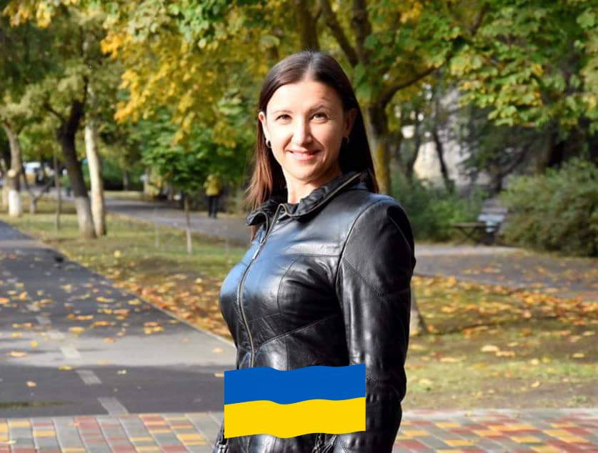

Inna Poliakova
Hi! I am glad to see you here.My name is Inna Poliakova. I'm from Ukraine.
My YouTube channel | My Facebook | My Instagram
My achievements
Athens Marathon 2019 (42 km)
Master's degree in Law. Odesa National Maritime University (Ukraine)
Master's degree in Social psychology. Postgraduate education (retraining). Odesa Mechnikov National University (Ukraine)
The Lane Kirkland Scholarship Program 2021-2022 (Poland)
Head of the Yuzhny municipal organization of the Liberal Political Party "Syla Lyudey" (Ukraine).
Head of the Political Party "Syla Lyudey" faction in the local council (Ukraine).
Founder and chief manager of the Non- governmental organization "Social Welfare" (Ukraine).
The Alliance of Her Academy-ALDE Party (Bulgaria). Certificate of the Alliance of Her Academy East Europe Class of 2021. Politics and women's leadership
Photo
My hobbies
I really like sports and various activities - running, hiking in the mountains, walking. In 2019, I participated in the Athens Classic Marathon and ran 42 km from the village of Marathon to the city of Athens (Greece). It was a very big challenge for me. But I love to challenge myself, set ambitious goals and achieve them. Now I face a new challenge: to get a new profession almost from scratch.
Another hobby is social media. For example, I have my own YouTube channel where I share my life experience with other people:
New challenges
More than 5 months ago, a war broke out in my country. And I was forced to leave Ukraine with my son. And for almost 4 months we have been living in the UK, in the city of Cheltenham. Unfortunately, my professions, which I received in Ukraine, are now of no value in a new country. And I need a new profession that has great prospects and will be in demand in any country in the world. So I decided to learn programming. Although I have never encountered this profession before, and this is a new field for me.
Another challenge is improving my English. I understand that in order to succeed in a foreign country and in a new profession, it is important for me to be fluent in English. Because programming is not only creating websites and writing scripts. It is also communication skills, co-working, co-creativity and coordination of efforts. And to clearly understanding each other is extremely important in this profession. Therefore, I go to foreign language courses and study English.
Leave your comment 👇